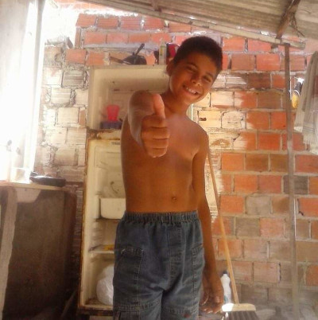

Breve resumo
Cauan é um cara que tenta ajudar todos a qualquer custo, porém acaba sendo incoveniente e meio intrusivo em muitas situações, ou seja, sempre acaba fazendo merda e a gente ri muito porque amigo é pra isso. Não acredita? olha essa carinha de quem so faz merda.
Pode ficar puto que comecei com seus erros mas sabe como é né, é minha natureza.
Habilidades
Eu nunca falei isso pra ele (eu acho), mas ele é o cara com mais habilidades que conheço, vou citar algumas habilidades e você marca oque ele faz melhor.
Amizades
Cauan é um cara com um histórico horrivelmente desgraçado, mas por incrível que pareça ele tem amigos, vou mostrar apenas os do nosso grupinho, o grupinho que eu e ele pertence.